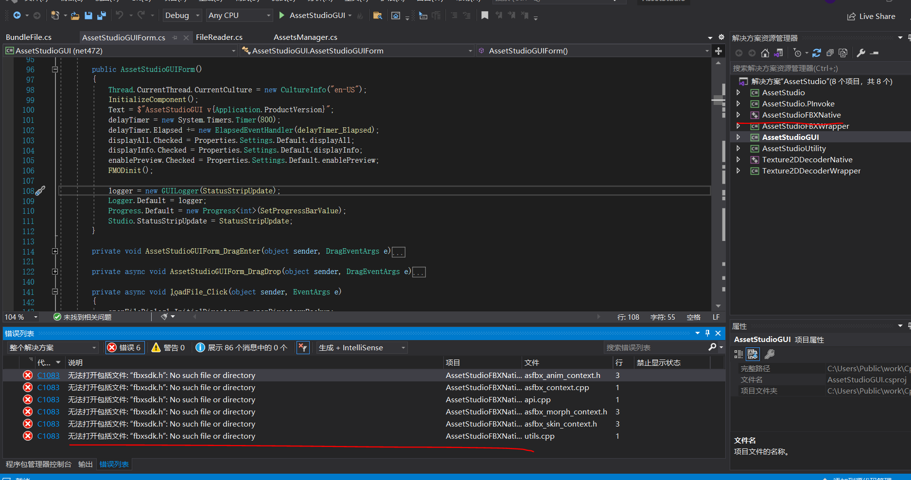
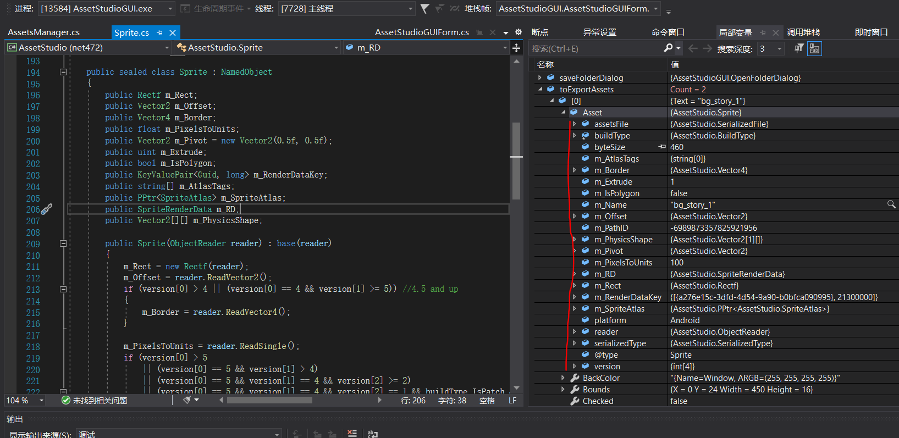
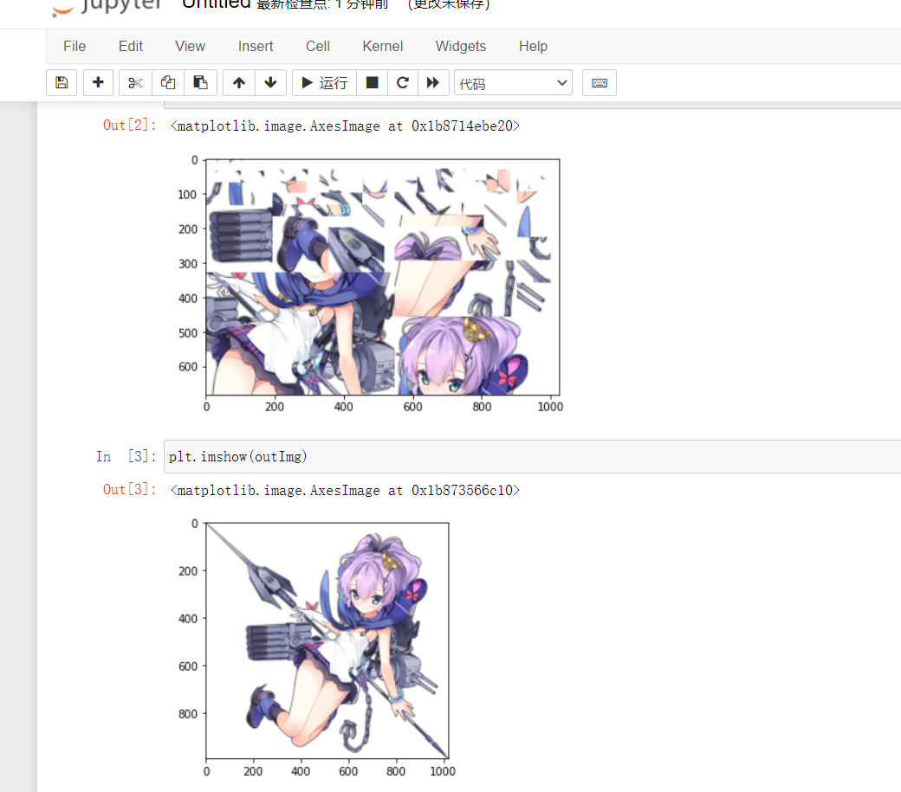
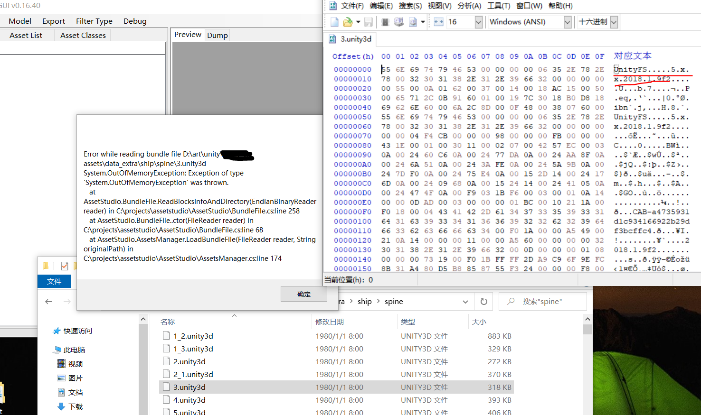
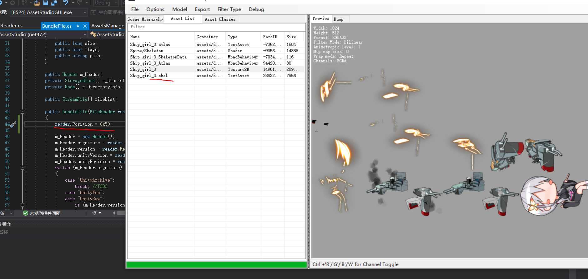

Unity资源解包
在上一节中，我们对Unity的整体架构有了一个大致的了解，也明白了我们需要的是什么，在这一节中，我们将把解包的工作落实下来。
解包的可能性
在做任何逆向工程的时候，可能性的考究是必要的，对于理论上已经证明过不可能的工作，做再多分析都是无用的，当然大部分解包基本都是理论上可能的。我们所寻求的资源无非是图片、音频、视频等媒体资源，而不是代码资源(大部分情况下)，两者的区别在哪呢？在于文件的“执行”上，媒体资源的执行即显示出来，代码的执行就如字面意思。对于静态编译的语言，特指C/C++，在执行上只需要文件所包含的机器指令即可，至于原来是什么样，丝毫不用关心，所以对于此类我们往往做的是反汇编而不是反编译，因为机器码和汇编指令是一一对应。但媒体资源不同，如图片，是有统一的标准的，在执行上本质都是依赖一个统一的库，如png的libpng，这些都不重要，重要的是这意味着一定要png的文件流才能执行，通常情况下，没有哪个企业会去自研一个图片格式，这是有一系列连锁反应的，自研一个图片格式还意味着要自研一个编辑器，等等，从产品周期上，这是十分低效的。正因这多方面的原因，就算是加密过的资源，为了“执行”它，在机器码的某处一定存在解密的代码，保存为某种文件流，在传入公共的资源解析器，这就是一切资源解包的基本思想。
AssetStudio
在正式开始解包实战前，我们先来看一个有用的工具，AssetStudio。实际上，对于使用原生Unity开发的游戏，只要找到加密资源位置，就可以直接用这个工具进行解包了，而且还是图形界面，操作十分方便。但是嘛，对于许多公司而言还是要留一些后手的，就算仍有被解包的可能，但至少不能让所有的人随意就得到资源，它们一般都有Unity源码，进行各种修改算是常规操作了。对于我们而言，进行过修改的才是我们的目标对象，但肯定不可能从零开始，站在巨人的肩膀上可以减少许多无用功，所以我们将以AssetStudio为基础进行更深入的解包。
编译运行
既然要以AssetStudio为基础，了解其大体构架是必需的。先尝试把程序顺利编译，以保证后续可以跟踪研读，笔者比较不幸一开始就遇到了问题

提示.net框架的SDK版本问题，笔者不常用windows自带的.net框架，所以SDK的版本一直都只有4.x，解决办法有几种，比如添加新版本的.net SDK，但笔者就直接降到自己所拥有的版本，正好作者也配了这个版本。从这我们还可以了解到这是.net项目，解决版本问题后，紧接着出现了下一个错误
这是windowSDK的版本问题，在右边，我们注意到这是一个C#与C/C++的混编项目，对于window而言两者的目标文件都是dll或exe，所以兼容编程是没啥问题的，实际上在jvm(java虚拟机)上也有类似的情形，原生的java、Kotlin和Scala都是编译为java字节码，也是可以混编的。windowSDK针对C/C++，将其改到我们的版本即可，当然保险的做法是保持与作者同样的版本。下一个错误
缺少相应的头文件“fbxsdk.h”，从名字上看就知道我们缺少fbx的sdk，fbx是3D模型的格式，此工具有3D模型的解包功能，模型的生成需要官方的解析库，自己写肯定不可能了，而且它本身还是闭源的，分析又进一步增加了难度。总之，我们缺少fbxsdk，看作者这里
作者使用的是fbxSDK2020，我们去下载相应版本，修改工程配置的相应路径即可
成功编译运行，解包也可以正常的进行，就是界面感觉有点糊，对比下载的版本
其实主要是两者的.net版本不同，虽然笔者的SDK只有4.x，但运行环境有5.x，下载的版本运行在5.x，自己编译的运行在4.x上，所以效果上有些不太一样，但核心功能都是有的，所以也不用过于在意。
程序总览
我们再来想一个简单的问题，这个软件做了什么？虽然界面东西这么多，但其核心功能就只有一个，加载待解包数据，然后导出需求格式文件。对于这种类型的开发，我们需要讲一个基本开发思想，即文件在程序运行过程中以怎样的形式存在，在很久以前的网络抓包中稍微提过这个思想。面向对象的本质是一种数据的组成结构，一种对象有什么样的成分，能做些什么均声明在类的内部。
文件解析也是同理的，不过在目前我们研究的问题里，我们还需要为文件专门准备一个类来讲文件转化为内存中的对象，然后再对此对象进行解析，将结果保存在对应的类对象中，也就是说文件解析的结果，最终都存在于软件的运行内存中。导出过程则是类对象的序列化过程，可以使用相应的库，如前面提到的fbxsdk，它可以将unity中解析出的模型数据，序列化为fbx文件。除了导入解析和导出，此项目还提供了预览功能，但与前两者对比就相形见绌了。此项目有如下成分
启动项是“AssetStudioGUI”，即此程序的主要界面，提供UI相关内容，“AssetStudio”是解析的主要部分，也是我们重点研究的对象，“AssetStudioFBXNative”和“AssetStudioFBXWrapper”提供fbx导出的功能，前者与sdk进行对接，后者完成C#部分的接口封装，“Texture2DDecoderNative”和“Texture2DDecoderWrapper”与前者类似用于纹理(即图片)的解析和导出，“AssetStudioUtility”提供丰富功能的工具类。
在项目“AssetStudioGUI”中，找到主界面文件“AssetStudioGUIForm.cs”，查看源代码，找到文件载入的源代码(先研究与Unity密切相关的此部分内容)
这里的OpenFileDialog，上下两个稍有区别，上一个直接使用.netFramework的UI接口，下一个虽然稍微封装了一下，但功能差不多，反正最后得到用户所选的路径，在Task中，AssetsManager实现文件的载入和解析工作，最后的“BuildAssetStuctures()”则是将结果反馈到界面上，所以解析的核心类是AssetsManager，在项目“AssetStudio”中，然后这就是我们分析的主角了。
文件解析
我们以文件加载为例，文件夹的话就是将里面文件遍历一般，没有本质的区别
此处仍然是一个架构式的流程，首先是预处理“MergeSplitAssets”和“ProcessingSplitFiles”，主要用于合并分割文件，比如下面这个例子
不论导入哪一个部分，最后的结果都是一样的，只能说过于智能了。有一个奇特的东西
拿前面的例子，在调试过程中，我们发现sharedassets0.assets的前些部分与sharedassets0.assets.split0的二进制文件基本相同，更进一步发现sharedassets0.assets包含了.split的所有部分内容，也就是这个游戏里放了两部分相同的资源，但这其实是有理由的，没有split部分负责索引，有split的部分负责具体的读取，这样在游戏运行过程中可以加快资源的读取。
预处理完后正式进入加载(Load)的过程，首先将原文件的索引和文件摘要(Hash)都保存到全局变量中去。LoadFile读取文件的内容并根据文件的类型保存在相应的文件对象中去

从这里可以看到作者准备了许多中类型，但实际应用中笔者基本只遇到过前两种，AssetsFile是最原始的序列化数据，我们不做任何处理的开发得到的就是它，在Android平台上它有一个后缀.unity3d，BundleFile是使用AssetBundle进行数据打包后的格式，通常都是分块存储，许多游戏的实战开发中遇到的基本是这种格式。Progress好像是一个计数器，目前作用不明，assetsFileList是SerializedFile(序列化文件)的列表，包含读取后的文件对象，就算是BundleFile也是一样的
我们使用BundleFile来构建相应对象，但方法结束后，此对象的周期就结束了，关键在于bundleFile的fileList以及后面的方法LoadAssetsFromMemory，顾名思义即从内存中读取AssetsFile对象(对应SerializedFile类)，这里的内存指的是对象bundleFile，你可以这样进行类比bundleFile相当于一个压缩包zip，里面的具体文件都是assetsFile，fileList包含所有的索引，所以bundleFile最终也将数据存储于assetsFileList内。ReadAssets用于解析AssetsFile对象，将内部的object一一构建相应的对象
为了读取的方便，一个AssetsFile往往包含复数个具体的文件对象，比如这里
这是一个Live2D的AssetsFile，它包含Texture2D(贴图)、Shader(着色器)、Animator(动画)等多种数据对象。ProcessAssets用于处理object之间的关联，构建树关系
可以看到，此部分主要处理GameObject直接的树状关系和与自己的Component构建联系，其结果的表现之一就是SceneHierarchy的内容
这里是一个Live2D所拥有的结构，Drawables就是平常画图中图层的树状结构。
数据导出
目前此工具主要实现了导出如图片、音频、3D模型等媒体文件的功能，我们以最简单的图片为例进行分析，其它情况类似，而且作者也写了不少导出其它格式文件的工具，一一分析太麻烦了，只要把握思想就足够了。
先把点击事件定位到，然后再一层层的向目的进发
由于软件功能较多，所以封装了许多层，先是导出的过滤器，然后是导出类型，总共有3种，Raw表示原封不动的导出，相当于文件的复制，但是针对的是Object的内容，属于原来文件的一部分，Dump相当于导出文件摘要，在预览(preview)旁边的那些数据，并非说文件只有这些数据，而是目前作者只做了这些数据的读取，其它部分的解析都没有做，比如MonoBehaviour，AnimationClip之类的，如果真的要导出的话，最好是Raw+Dump导出，这样数据比较全，Convert表示可转化数据，也是我们研究的重点，比如图片(Texture2D)就是从这里导出的
最开始item.Asset获取我们之前解析出的Texture2D对象，然后读取全局的设置，这个软件中可以找到
在这里我们可以选择导出图片的格式，你可能有些疑惑，为什么还能选择格式，我们详细解析Texture2D的时候会再提到，后面的代码就比较容易理解了，try属于检测语句，通过Texture2D内部的方法ConvertToImage实现从内存到文件流的转换，最后通过WriteToStream将文件流数据写入具体位置。
Texture2D
为了更加深入了解数据的流动过程，我们拿Texture2D来跟踪一下。
我们研究一个简单的BundleFile，里面只有一个背景图片
在文件流对象FileReader创建之时就确定了文件的具体类型
我们发现Bundle内部有两个文件，一个是AssetsFile包含我们所需的数据，另一个是ResourceFile作者加了TODO表示以后再来解析，实际上它对我们意义不大，不要也罢，到目前我们只有一个AssetsFile
从这个AssetsFile我们得到3个object，其中一个是贴图(Texture2D)，另一个是用来承载图片的Sprite，属于GameObject，搞开发应该很清楚，通常情况下图片不是直接显示，而是作为Component依附于一个Object，而最后一个是对自身的引用，不在考虑的范围内
稍微研究一下即可发现，打包后的资源实际是OpenGL的Texture2D格式，意味着unity在打包图片资源的时候实际上已经进行过格式解析了，除去保留相关信息的文件头外，数据最终在image_data内，存储方式属于位图，与png之类的核心区别其实是是否压缩过，虽然与我们之前的理论有些相悖，但这也是另外一种图片显示表达，玩过OpenGL的应该知道图片数据解析以后也是配置信息加逐像素数据(是位图但不是bmp)，这也解释了为什么图片可以保持为多种格式，因为OpenGL的Texture2D本质不是文件格式而是图片在内存中的格式，最后的ProcessAssets基本没有处理。接着再来看看导出过程吧
作者将Sprite默认作为图片导出，实际导出了Texture2D，这可能是作者的见解，Sprite的内容本身是很丰富的
有众多的参数，实际开发中其相当于一个类，这里相当于将类进行重写，理论上导出dump才是合理的

我们利用工具可以轻易地看到两者之间的对应关系，具体的代码和运行的结果都表明了确实如此
我们闲着无聊再看看图片的导出过程吧
首先将位图数据buff转化为可以用于图片解析的image对象
Image是一个外部库的类，图片压缩综究得靠第三方库，但我们这里得到的对象是image是我们封装过的子类

不过封装的内容好像也不多，就加了一个内存选择，保存的最后函数还是靠第三方库SixLabors.ImageSharp，至于这个库嘛，不是我们解说的范畴。
解包实战
理论和解包的核心内容已经说了很多了，投入实践才是主要的内容，与此同时还能遇到各式各样的问题，让我们来一一解决吧。
实例一
先来一个最简单的情形，就一张立绘
但与一般图片不同，除了Texture2D和Sprite以外，还多了一个Mesh对象，而且Texture2D还是碎裂的图片，一个简单的方法就是手动使用ps来复原，但是既然程序可以复原，自然应该有机械的流程，其关键就是Mesh对象，已经有人开发了相关GUI程序依据Mesh来复原，但我们还是稍微解析一下。Mesh是网格对象，在OpenGL中进行模型载入的时候用的很多，主要保存顶点数据、纹理坐标、法线等，它一般情况下与obj是等价的，所以作者在这里将其导出为obj文件，其有一个显著特点，数据完全开放
而且就算是数值型数据，也以字符的形式进行存储，直接进行解析是完全可以的，平常开发中，我们通过assimp库将obj读取为Mesh对象。值得说明的是，原始存储的文件数Mesh对象的序列化，存储的数据更加紧凑，读取也会有更快的速度，因为加载的时候综究要变为Mesh对象，这似乎和之前的图片类似，主要目的都是便于读取，减少中间过程。
最简单的办法是使用blender，首先导入网格数据obj文件
还需要注意的是其顶点没有使用标准化数据，所以需要修改相机的参数如上，接着导入贴图文件
最后再简单的写一个shader以完成渲染
最后再通过Imge的save即可保存渲染结果

但是这样不仅繁琐，而且渲染结果跟shader(着色器)有很大的关系，实际上我们需要做的只是依据obj的数据进行图片拼接，这样还能保持图片本身的色调，其实现过程并不难，我们拿易用的Python来实现一下
1 | # 基本库 |
这虽然只是一个简单的脚本，但可以依据上面的三个参数包装成一个函数，然后各种批量处理也就很好实现，来看看运行的结果吧
把图片放大看一看
效果还是可以的，至于代码的分析就在注释里，所以就到此为止吧。
实例二
再来看一种情况
在这个实例中，此文件具有标准的文件头，但加载的时候出现了问题，异常是内存溢出。虽然不太明白，那我们就让程序运行到溢出的位置来看看情况吧
很容易的，我们发现了内存溢出的原因，读取头文件中的内存与文件实际的内存大小不匹配，没办法了只能再看看16进制文件进行猜测了
从地址0x50开始，出现了无压缩BundleAssets的特征，那么我们尝试改变读取的初始地址看一下是否可行
幸运的是，直接就解包成功了，这是一个spine的骨骼动画文件，作者并没支持此类导出，看来除了贴图啥也用不了。经过多次尝试，基本整个游戏的所有资源都能导出，比较麻烦的是每次初始地址都不一样。经过多次分析可以发现整个文件只有两个特征头数据，而且到0x21的内容都是相同的，所以我们可以把读取函数稍微改改即可

成功实现的复数文件的解包，批量处理自然不在话下。比较让人在意的是，开头那一段东西到底是什么，(过了许多天)，经过笔者几天的努力，终于把整个体系给扒清楚了，开头的那一段就是冗余数据，在解包的脚本中有计算的方法，就是下面这一段
其只与文件名有关，而且不包含父目录，笔者比较累了，就不复写到C#里了，就直接把拿来调用了
得到的结果完全一致，我们最初的目的达到了。由于解包十分的繁琐，接下来我将把整个思路理一遍，但并不一定泛用，只是针对这个特例的，让我们开始吧。
文件总览
先看一下资源文件
经过简易地浏览，可以得知，这个游戏总共有三种资源，.unity3d结尾的是AssetsBundle文件，是我们最终的目标，bootstrap.xml一种特殊加密的xml文件，最后一种就是lxdata文件，其中“config.conf”,“script.script”,“starter/xbask.core”虽然后缀不同，但在十六进制编辑器中可以看到，文件头都是一样的，通过百度谷歌等搜索引擎，找不到这种资源的任何信息，所以它是作者自己的加密方式，所以接下来的重心落在代码的分析上了。
然后再看一下动态库
注意里面只有以so结尾的才是原来的动态库，以i64结尾的是IDA动态库分析产生的数据库打包文件，global-metadata.dat是从程序资源文件中拿过来的，如果是安卓的话，应该位于解包后文件的这个位置“assets/bin/Data/Managed/Metadata”。这个文件来源于il2cpp的运行机制，il2cpp将C#的中间码往机器码转义的时候，两者的函数调用机制不同，机器码通过寻址实现，而一般面向对象语言都是基于全局函数表，说太多很复杂，笔者也没有很深入理解底层。本身来说能编译为机器码的大多都是C系的语言，C#和大多语言都是一样，依靠的是中间码和运行环境，静态分析的时候IDA不会以C#来理解机器码，而是以C系语言来分析，所以这个对照文件是必需的。
当然也不需要知道多，我们直接使用已有的工具Il2cppDumper。它的依靠.dat文件和so文件，来生成对照表，对于大部分情况基本无法生成运行逻辑，它会生成这些文件
这么多对这个软件开发者可能有用，但我实际只用了两个，字符对照表“stringliteral.json”和函数对照表“dump.cs”，至于作者那些辅助脚本，没有详细的文档，实在不想浪费时间去研究了，而且目前的东西已经够了，不过“dump.cs”的逻辑结构不够清晰，只是便于进行文本搜索，所以还会再用到DummyDll里的dll文件。当然两个文件本质是一样的，只不过后者可以放到C#反编译工具中来生成逻辑结构。
从il2cpp到tolua
我们先找到unity的入口函数
这是Unity最原生的资源打包，基本没办法加密，注意到两个Mono脚本，随便一猜就知道Main肯定是入口类。在“dump.cs”里面定位Main类，从而找到在动态库文件中的地址
在Unity里面，Start就相当于初始化，所以这里是我们分析的起点了，接着在IDE里定位地址进行伪代码分析
最右边是IDA生成的伪反编译代码，我们注意到有许多sub_×××形式的函数，这就是我们之前所说的由C#通过il2cpp转义来的函数，它们有一个特点就是一段加载过程，注意到右边的伪代码窗口，直到il2cpp_runtime_class_init_0之前的代码都是可以忽略的，它的逻辑来源于il2cpp，删去对理解的影响不大，以后会渐渐察觉到这点，然后就是下面的sub_1C22CBC()到底是什么函数，实际上sub后面的十六进制串就是函数的地址，我们可以通过“dump.cs”对照表找到这个函数
在分析过程中还可能遇到字符串的情况
像这样就可以直接定位到字符串了，在so文件中只能定位到全局变量。在这个阶段只要有耐心一步步下去即可，我们可以得到大致的运行流程图
在整个C#部分，XbaskEngine是最重要部分，但核心的实现并不在这层，这里的XbaskEngine实际是Xbask引擎在C#的接口
除了xbask，其它的命名空间基本都是第三方的，比如spine和live2d是做2D动画的，luainterface是lua与C#交互用的，而xbask内部的函数最终也指向那几个extern函数，也就是外部函数，不在这个动态库中。通过这个动态库的引用表可以找到，其链接的库是libtolua.so，tolua是C++与lua交互用的，原生的lua是用纯C写的，所以原生lua和C交互比较方便，tolua进以后拓展到了C++，你可能会觉得C和C++不是一体的吗？其实tolua更重要的作用是将lua的表与C++中的类对应起来，这个在原生C内是没有实现的，单纯在lua虚拟机上进行数值操作，C++确实也能完成。
如果我们拿这个游戏的tolua和其它游戏对比，会发现它大了好多倍，也就是说里面实际有许多作者加进去的函数，因为这个库是由C系语言编译来的，所以我们可以用函数名定位到core_engine_init函数
通过十分漫长的一段分析时间，我看可以得到
client_x是命名空间ClientX的代理层，实际上前者处于C层，后者处于C++层，真正的实现都在ClientX里实现，为什么要这么麻烦呢？其实C#与C++是比较难交互的，两种的类对象的底层实现并不相同，但C面向函数的特性可以从函数实现交接，而C++使用面向对象的特性就很好进行数据管理了，而且还能嵌入C代码，所以一劳永逸是划算的。在ClientX的InitConfig和SetBootstrapConfig内主要完成成员变量的赋值，在Init完成初始化的任务，但其是委托给AppInstall完成的，在AppInstall的Init里基本才是整个程序的核心，包括bootstrap解析，从云端下载数据，解析脚本等。至于为什么再来一个AppInstall，一种解释是分工越细越好，另一种解释应该是移植。通过对游戏历史的考证，其原来使用的引擎是cocos2dlua，在不知什么时候改成了Unity，这可能吗？确实有可能，因为游戏的脚本全是用lua写的，而AppInstall实际就是cocos2dlua那里移植过来的残留，目的很简单就是为了实现游戏的热更新。由于剔除了cocos2d的引擎内核，ClientX实际相当于模拟cocos2d调用AppInstall的过程，当然这样并不够还有游戏内核接口的绑定，好在这个游戏公司在lua层加了一个xbask引擎，所以移植的时候只要将xbask的接口通过tolua#重新绑定到Unity内核函数即可，当然这还是得归功于lua函数的动态绑定机制。
通过流程图可以知道，在fclose后即数据已经载入内存，会更具寄存器W28的值判断是否直接进入pugixml，W28的值是我们传入的第二个参数pc_encrypt_config，从具体文件和静态分析都表明它是true，所以data_decode_to_binary就是解密的核心函数，至于前面那个，是用于获取需要多少内存的，为原内存的3/4，至于pugixml则是解析xml的C库
此函数总共有4个参数，分别是解密后数据的内存和长度，原数据的内存和长度，前面一些校验的代码可以不用管，我们直接仿写核心代码
因为IDE的类似伪代码，肯定不能直接用，但随便改改基本就可以了，其中的byte_3810F0是一个常byte数组，可以在so的常量表里找到，真正赋值解密就一句话，嵌入在if中，在if有执行语句并不奇怪，因为这是逗号表达式，只要最后一个是布尔值就可以了，不对，在C里面只有有值就行了，运行一波可以得到
其中gcc(c编译器)不是shell自带的需要安装，从输出1和2的分布就知道，为什么解密后文件内存是原来的3/4了，比较可惜的是，我们得到的只是一个配置表，实际上这是用来文件安装的，对我们没什么用，不过我们已经迈出了解密的第一步了。
继续分析AppInstall，依据bootstrap.xml下载文件，安装游戏完成以后，进入script脚本的解析
这个脚本对应的是游戏目录下的是script.script，它属于lxdata数据文件，其数据的加载在packet_open里面完成，虽然这里是针对一个特例的运行，但考虑到人的惰性，我们有理由相信packet_open应该可以解析所有的lxdata数据，接着看这个函数
读取完文件以后，有进行文件头lxdata的比较，文件头总共12个字节，第7位是零，第8位是3，所以解析lxdata的函数实锤了

接着就是一个循环，先读取两个字节，通过某种运算后，得到接下来需要读取的字节数，以此类推得到多块数据，也就是说lxdata也是一种将许多文件打包的数据类型。但我们没有进行下去了，因为我们遇到了一个难点
在后续的分析中，我们发现了最开始分配的那2136字节并作为返回值的内存块的意义。它其实应该是一个结构体编译来的，用来保持解析packet后的数据的引用，解析后的数据应该存在一个可能叫table的结构体中，而packet则是在此基础上再封装一些包的其它信息，那么lxdata是什么呢？其实它大概是table结构体的序列化数据，注意这都是猜测，因为编译后本身就会丢失很多源码的信息，比如C里面的结构体直接翻译为内存块，而寻址基本是编译时期，编译器就把完成了。那么难点在哪呢？我们仿照着伪代码进行读取解密代码的编写，运行后只能得到这些
虽然数据确实一块块的提取出来了，但并不是我们想要的，想要通过伪代码推出packet和table结构体的结构有些困难，而数据又是动态处于内存中的，相应通过文件保持下来实在太困难了。但是方法总比困难多，接下来请欣赏一种另辟蹊径的方法。
利用动态库
既然我们没办法仿写代码，那我们直接利用库里面的代码不就行了吗！调用没有头文件的库，确实异想天开，但原理上是有可能的。
通过对库文件的分析，我们需要三个函数，packet_open打开lxdata包，并返回packet结构体，packet_open_file打开packet中的某快文件并返回长度，packet_read_file读取packet中被open的文件。你问我为什么会知道这些？一个是通过函数名，最开始看到packet_read_file就感觉是我们需要的函数，但仔细分析参数和伪代码可以发现
在此函数的三个参数中，第一个是packet结构体，第二个是数据将要写入的内存，第三个是字节数，但我们之前的分析表明数据是分块存储的，也就是packet内有多块数据，并没有指向某个数据就取数据，显然是不可能的，于是我们试着寻找调用这个函数的代码
结果真的找到了，还告诉了你该怎么用，packet_open_file有两个参数，第一个是packet结构体，第二个是需要取出文件的名称，然后返回文件当然大小，接着以这个大小分配一块内存调用packet_read_file即可读出数据。但我们还有一个问题，packet内文件的名称都是什么？这个算是无意间发现的，笔者没有思路的时候，随便看了看其它函数，发现了packet_dump的特别之处
这是一个日志输出的函数，传入packet结构体可以把包的信息都打印出来，好家伙，正愁找不到文件名，它就直接打算给我，这算是一个小小的漏洞吧。好了，函数理解的差不多了，接下来该开始实践代码，由于库文件是arm架构的，而电脑是x86架构，所以我们只能在手机上编译运行，使用我们的神器Termux
这里有几个关键点，首先对于有参数函数一定要声明到头文件，虽然编译以后参数并不重要，汇编本身会表明参数，重要的只是函数名，但是编译器会依据进行代码优化，比如内存对其，会使得两种数据结构并不一定兼容，所以即使编译器不关注头文件，但还是得写出来。其次，我们还调用了库里面的函数filelog_create，这相当于初始化日志文件，不先执行这句函数，packet_dump不能正常输出日志文件。最后是链接到游戏的libtolua，并把当前目录添加到加载目录中，库文件可以直接从文件中拿出来。最后生成的数据在log_log里面，我们依据之前在伪代码中看到的内容即可提取所需的文件名
我们随便选一个，加载看看
我们成功了，这确实十分的神奇，接下来我们的目的是进行批量处理，我们先按照上面的方法，把config、xbask和script的日志打印出来，然后过滤为只包含文件名的list，使用命令行的grep加重定向也可以，但输出的文件包含“file name:”这段没用的信息，复杂的命令出来我不会，放到C里面解析又麻烦，所以干脆写了一个简易的python脚本来实现转化
接下来我们依据这个配置文件来写批量处理代码
这些是核心代码，里面用来两个系统命令mkdir和chdir，作用是创建目录和更换目录
我们完美的得到了所需要的全部文件，你可能注意到了程序运行过程中出现了错误，但其实是执行完我们所需代码之后的事，并不影响效果
问题出现在文件末进行getc的时候，这实际是我们所给的列表文件的问题，不是很严重就懒得管了，一番努力之后，我们把三个lxdata全部解包完成，config包含一系列json的配置文件，script是整个游戏的核心lua代码，xbask是处于lua的中间层，目的是隔离lua和内核方便代码迁移，然后接下来就简单了。
先考察script里的init之类的初始化代码
我们有理由猜想gamecore的ResourceLoader就是用于加载资源的，我们定位到xbask的这个结构(称为类其实也行)
这是luajit的字节码文件，这种破解体系成熟难不倒我们，我们直接运用相关反编译工具

之所以比较混乱，是因为许多外部的全局函数，我们的反编译工具无法识别，但我们懒得添加，而且虽说乱，但看懂也是没有问题的。我们找到资源包加载的函数
在资源加载中调用了get_asset_bundle_crc_offset函数，顾名思义获得资源文件的冗余偏移，而且其结果将作为资源文件加载的参数。经过考察，这个函数是ResourceLoader的成员变量，其设置函数在script的init里可以找到
而其所调用的函数，就是我们最开始所说的那个，到此我们终于揭开了数据文件开头的东西是什么了。
小结
说来也奇怪，明明使用我们最开始的方法就可以跳过这段冗余数据，完成资源的解包，但我们相信或许它包含着某些信息，想去一探究竟，但结果最后告诉我们它确实就是一段冗余数据。数据怎么生成的呢？这发生在资源打包的时候，我们很难甚至无法从结果进行推测，而且解析也是单纯的跳过，将其视为无用数据是唯一的解了。
解包中还可能遇到特殊的音频文件，这是有传统的解包路线的，acb→hca→wav，虽说繁琐了点，但大概没什么人去研究，就只能这样了。这解包实战中，我们只有一个核心例子，解包是十分耗费精力的，而且方法都不泛用，有时可能还要碰碰运气。所以我们只举一个例子来说明，有什么思考方向，又该如何思考等思想性的东西，汇编分析综究还是得靠经验的积累，做多了，自然就熟了。好了，解包就先告一段落了。